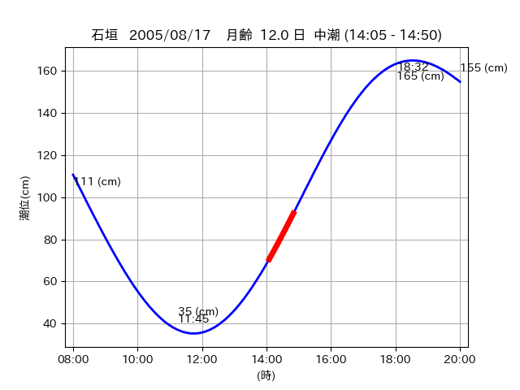
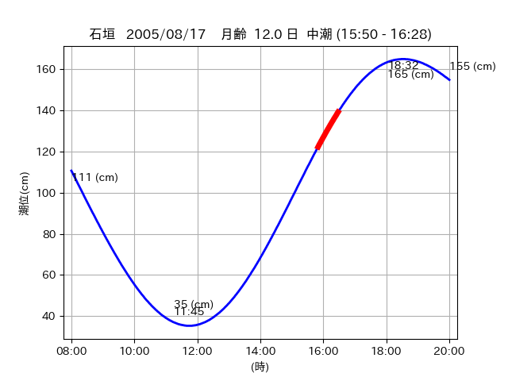

<!DOCTYPE html>
<html>
<head>
    
    <meta http-equiv="content-type" content="text/html; charset=UTF-8" />
    
        <script>
            L_NO_TOUCH = false;
            L_DISABLE_3D = false;
        </script>
    
    <style>html, body {width: 100%;height: 100%;margin: 0;padding: 0;}</style>
    <style>#map {position:absolute;top:0;bottom:0;right:0;left:0;}</style>
    <script src="https://cdn.jsdelivr.net/npm/leaflet@1.9.3/dist/leaflet.js"></script>
    <script src="https://code.jquery.com/jquery-3.7.1.min.js"></script>
    <script src="https://cdn.jsdelivr.net/npm/bootstrap@5.2.2/dist/js/bootstrap.bundle.min.js"></script>
    <script src="https://cdnjs.cloudflare.com/ajax/libs/Leaflet.awesome-markers/2.0.2/leaflet.awesome-markers.js"></script>
    <link rel="stylesheet" href="https://cdn.jsdelivr.net/npm/leaflet@1.9.3/dist/leaflet.css"/>
    <link rel="stylesheet" href="https://cdn.jsdelivr.net/npm/bootstrap@5.2.2/dist/css/bootstrap.min.css"/>
    <link rel="stylesheet" href="https://netdna.bootstrapcdn.com/bootstrap/3.0.0/css/bootstrap-glyphicons.css"/>
    <link rel="stylesheet" href="https://cdn.jsdelivr.net/npm/@fortawesome/fontawesome-free@6.2.0/css/all.min.css"/>
    <link rel="stylesheet" href="https://cdnjs.cloudflare.com/ajax/libs/Leaflet.awesome-markers/2.0.2/leaflet.awesome-markers.css"/>
    <link rel="stylesheet" href="https://cdn.jsdelivr.net/gh/python-visualization/folium/folium/templates/leaflet.awesome.rotate.min.css"/>
    
            <meta name="viewport" content="width=device-width,
                initial-scale=1.0, maximum-scale=1.0, user-scalable=no" />
            <style>
                #map_c90f5ce3fc4df346a4ec4eacdd0a81c6 {
                    position: relative;
                    width: 2048.0px;
                    height: 1600.0px;
                    left: 0.0%;
                    top: 0.0%;
                }
                .leaflet-container { font-size: 1rem; }
            </style>
        
</head>
<body>
    
    
            <div class="folium-map" id="map_c90f5ce3fc4df346a4ec4eacdd0a81c6" ></div>
        
</body>
<script>
    
    
            var map_c90f5ce3fc4df346a4ec4eacdd0a81c6 = L.map(
                "map_c90f5ce3fc4df346a4ec4eacdd0a81c6",
                {
                    center: [24.37, 123.967],
                    crs: L.CRS.EPSG3857,
                    ...{
  "zoom": 12,
  "zoomControl": true,
  "preferCanvas": false,
}

                }
            );

            

        
    
            var tile_layer_5636434223dbdcbdb703eb1cbec2173c = L.tileLayer(
                "https://cyberjapandata.gsi.go.jp/xyz/seamlessphoto/{z}/{x}/{y}.jpg",
                {
  "minZoom": 0,
  "maxZoom": 18,
  "maxNativeZoom": 18,
  "noWrap": false,
  "attribution": "\u5730\u7406\u9662\u5730\u56f3",
  "subdomains": "abc",
  "detectRetina": false,
  "tms": false,
  "opacity": 1,
}

            );
        
    
            tile_layer_5636434223dbdcbdb703eb1cbec2173c.addTo(map_c90f5ce3fc4df346a4ec4eacdd0a81c6);
        
    
            var marker_f970cbb72904141deeaa1f6e4229df6f = L.marker(
                [24.3642, 123.9552],
                {
}
            ).addTo(map_c90f5ce3fc4df346a4ec4eacdd0a81c6);
        
    
            var icon_a13a1d95cd0563a63c8ac91a47714bd2 = L.AwesomeMarkers.icon(
                {
  "markerColor": "orange",
  "iconColor": "white",
  "icon": "info-sign",
  "prefix": "glyphicon",
  "extraClasses": "fa-rotate-0",
}
            );
        
    
        var popup_2dd8996e94c8fb19fc83fd8ac4981b9e = L.popup({
  "maxWidth": "100%",
});

        
            
                var html_a2fef52652a87afcd940d616578dbdad = $(`<div id="html_a2fef52652a87afcd940d616578dbdad" style="width: 100.0%; height: 100.0%;"><table><tr><td></td></tr><tr><td><center>20050817 No.1 </center></table></td></tr></table</div>`)[0];
                popup_2dd8996e94c8fb19fc83fd8ac4981b9e.setContent(html_a2fef52652a87afcd940d616578dbdad);
            
        

        marker_f970cbb72904141deeaa1f6e4229df6f.bindPopup(popup_2dd8996e94c8fb19fc83fd8ac4981b9e)
        ;

        
    
    
                marker_f970cbb72904141deeaa1f6e4229df6f.setIcon(icon_a13a1d95cd0563a63c8ac91a47714bd2);
            
    
            var poly_line_fb9d1796229365e926b668b45f40a090 = L.polyline(
                [[24.3642, 123.9552], [24.3562, 123.9528]],
                {"bubblingMouseEvents": true, "color": "#00FFFF", "dashArray": null, "dashOffset": null, "fill": false, "fillColor": "#00FFFF", "fillOpacity": 0.2, "fillRule": "evenodd", "lineCap": "round", "lineJoin": "round", "noClip": false, "opacity": 1.0, "smoothFactor": 1.0, "stroke": true, "weight": 3}
            ).addTo(map_c90f5ce3fc4df346a4ec4eacdd0a81c6);
        
    
            var marker_829b1b753e5c588b0417a80633b727f9 = L.marker(
                [24.3458, 123.9452],
                {
}
            ).addTo(map_c90f5ce3fc4df346a4ec4eacdd0a81c6);
        
    
            var icon_bef795efa2d30f757d6e51b6303bfea0 = L.AwesomeMarkers.icon(
                {
  "markerColor": "orange",
  "iconColor": "white",
  "icon": "info-sign",
  "prefix": "glyphicon",
  "extraClasses": "fa-rotate-0",
}
            );
        
    
        var popup_e6690f79ef2150813dd37d448413f778 = L.popup({
  "maxWidth": "100%",
});

        
            
                var html_e1a18fd27f458ba1414eda98699e750e = $(`<div id="html_e1a18fd27f458ba1414eda98699e750e" style="width: 100.0%; height: 100.0%;"><table><tr><td></td></tr><tr><td><center>20050817 No.2 </center></table></td></tr></table</div>`)[0];
                popup_e6690f79ef2150813dd37d448413f778.setContent(html_e1a18fd27f458ba1414eda98699e750e);
            
        

        marker_829b1b753e5c588b0417a80633b727f9.bindPopup(popup_e6690f79ef2150813dd37d448413f778)
        ;

        
    
    
                marker_829b1b753e5c588b0417a80633b727f9.setIcon(icon_bef795efa2d30f757d6e51b6303bfea0);
            
    
            var poly_line_364a7cccd7cb5304e8084073d908d6a2 = L.polyline(
                [[24.3458, 123.9452], [24.3543, 123.9476]],
                {"bubblingMouseEvents": true, "color": "#FF00FF", "dashArray": null, "dashOffset": null, "fill": false, "fillColor": "#FF00FF", "fillOpacity": 0.2, "fillRule": "evenodd", "lineCap": "round", "lineJoin": "round", "noClip": false, "opacity": 1.0, "smoothFactor": 1.0, "stroke": true, "weight": 3}
            ).addTo(map_c90f5ce3fc4df346a4ec4eacdd0a81c6);
        
    
            var marker_9b7a0ef1b83b14ac4e435b722da78415 = L.marker(
                [24.3694, 123.9661],
                {
}
            ).addTo(map_c90f5ce3fc4df346a4ec4eacdd0a81c6);
        
    
            var icon_67524d45b98b8f25d713cdcc54b7192e = L.AwesomeMarkers.icon(
                {
  "markerColor": "orange",
  "iconColor": "white",
  "icon": "info-sign",
  "prefix": "glyphicon",
  "extraClasses": "fa-rotate-0",
}
            );
        
    
        var popup_6011d1040727bb09aecce758ee4c2574 = L.popup({
  "maxWidth": "100%",
});

        
            
                var html_5a8ba41b9e51493a2361280513a31f1b = $(`<div id="html_5a8ba41b9e51493a2361280513a31f1b" style="width: 100.0%; height: 100.0%;"><table><tr><td></td></tr><tr><td><center>20050817 No.3 </center></table></td></tr></table</div>`)[0];
                popup_6011d1040727bb09aecce758ee4c2574.setContent(html_5a8ba41b9e51493a2361280513a31f1b);
            
        

        marker_9b7a0ef1b83b14ac4e435b722da78415.bindPopup(popup_6011d1040727bb09aecce758ee4c2574)
        ;

        
    
    
                marker_9b7a0ef1b83b14ac4e435b722da78415.setIcon(icon_67524d45b98b8f25d713cdcc54b7192e);
            
    
            var poly_line_873ff6d5c9519d127f2c76a374c444d4 = L.polyline(
                [[24.3694, 123.9661], [24.3712, 123.9676]],
                {"bubblingMouseEvents": true, "color": "#FF00FF", "dashArray": null, "dashOffset": null, "fill": false, "fillColor": "#FF00FF", "fillOpacity": 0.2, "fillRule": "evenodd", "lineCap": "round", "lineJoin": "round", "noClip": false, "opacity": 1.0, "smoothFactor": 1.0, "stroke": true, "weight": 3}
            ).addTo(map_c90f5ce3fc4df346a4ec4eacdd0a81c6);
        
</script>
</html>